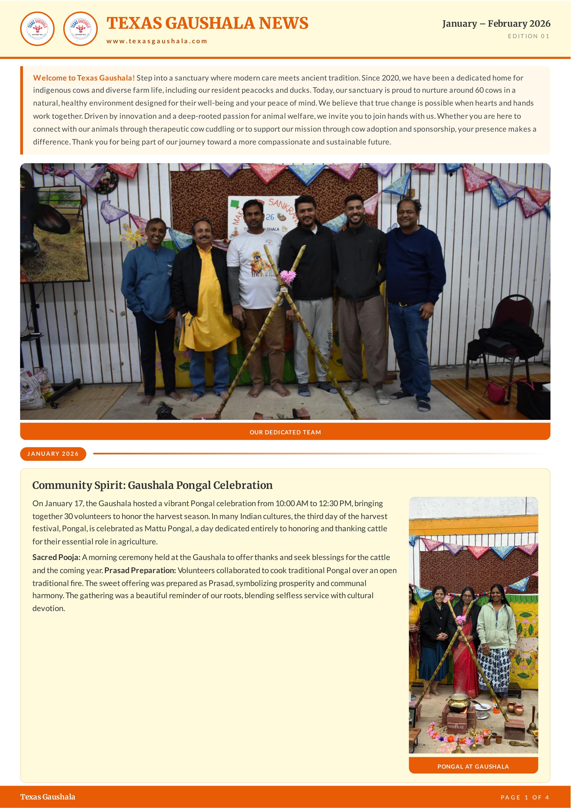
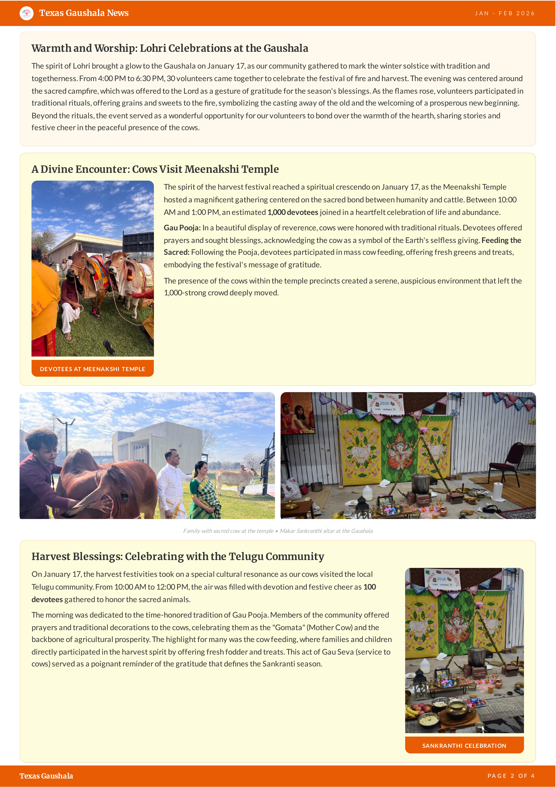
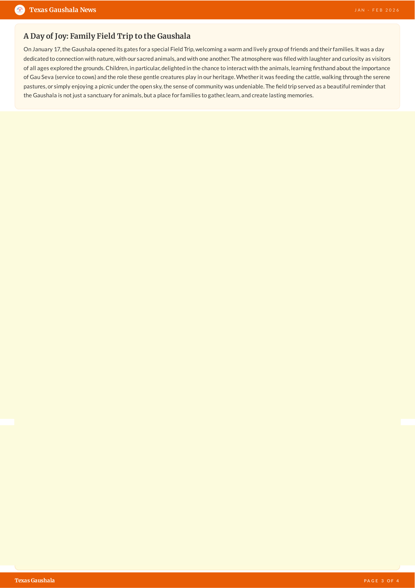
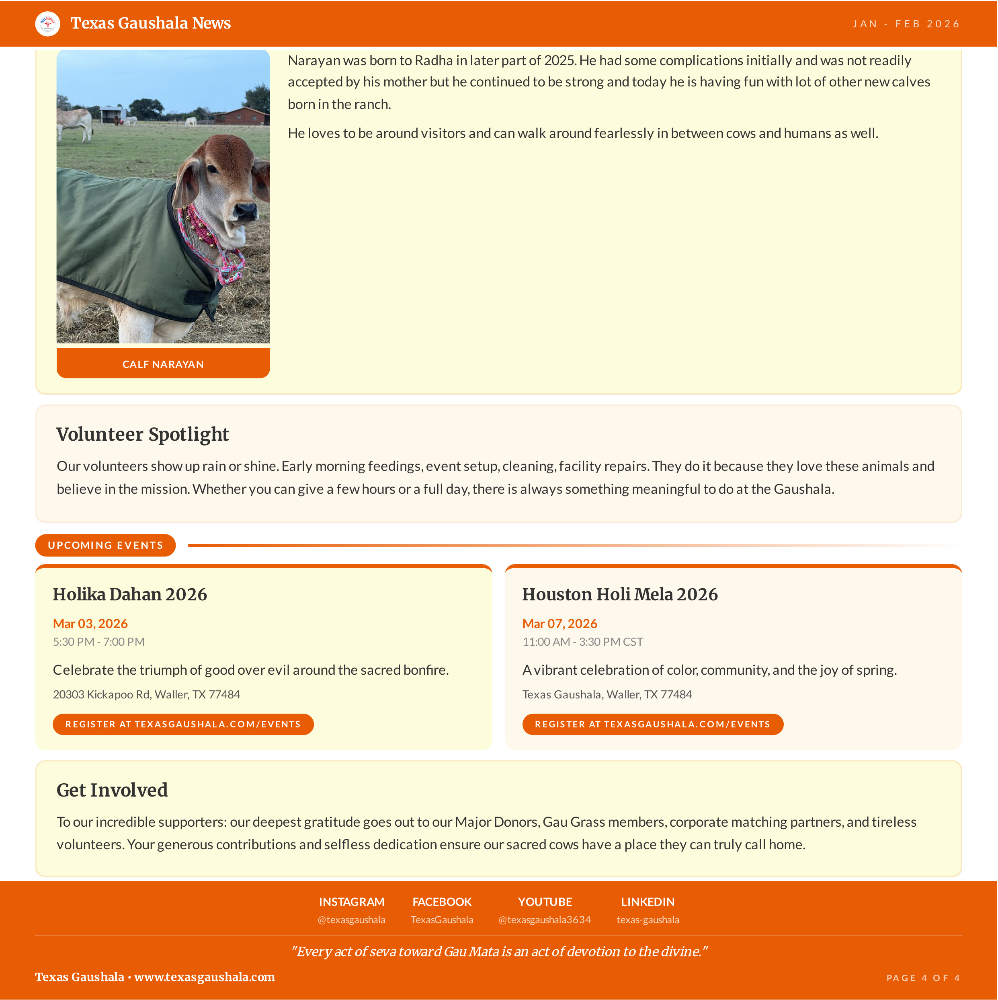

TEXAS GAUSHALA NEWS
www.texasgaushala.com
January – February 2026
EDITION 01
Welcome to Texas Gaushala! Step into a sanctuary where modern care meets ancient tradition. Since 2020, we have been a dedicated home for indigenous cows and diverse farm life, including our resident peacocks and ducks. Today, our sanctuary is proud to nurture around 60 cows in a natural, healthy environment designed for their well-being and your peace of mind. We believe that true change is possible when hearts and hands work together. Driven by innovation and a deep-rooted passion for animal welfare, we invite you to join hands with us. Whether you are here to connect with our animals through therapeutic cow cuddling or to support our mission through cow adoption and sponsorship, your presence makes a difference. Thank you for being part of our journey toward a more compassionate and sustainable future.
Community Spirit: Gaushala Pongal Celebration
On January 17, the Gaushala hosted a vibrant Pongal celebration from 10:00 AM to 12:30 PM, bringing together 30 volunteers to honor the harvest season. In many Indian cultures, the third day of the harvest festival, Pongal, is celebrated as Mattu Pongal, a day dedicated entirely to honoring and thanking cattle for their essential role in agriculture.
Sacred Pooja: A morning ceremony held at the Gaushala to offer thanks and seek blessings for the cattle and the coming year. Prasad Preparation: Volunteers collaborated to cook traditional Pongal over an open traditional fire. The sweet offering was prepared as Prasad, symbolizing prosperity and communal harmony. The gathering was a beautiful reminder of our roots, blending selfless service with cultural devotion.
Logo
Hero Photo
Pongal
Texas Gaushala

Warmth and Worship: Lohri Celebrations at the Gaushala
The spirit of Lohri brought a glow to the Gaushala on January 17, as our community gathered to mark the winter solstice with tradition and togetherness. From 4:00 PM to 6:30 PM, 30 volunteers came together to celebrate the festival of fire and harvest. The evening was centered around the sacred campfire, which was offered to the Lord as a gesture of gratitude for the season's blessings. As the flames rose, volunteers participated in traditional rituals, offering grains and sweets to the fire, symbolizing the casting away of the old and the welcoming of a prosperous new beginning.
Beyond the rituals, the event served as a wonderful opportunity for our volunteers to bond over the warmth of the hearth, sharing stories and festive cheer in the peaceful presence of the cows.
A Divine Encounter: Cows Visit Meenakshi Temple
The spirit of the harvest festival reached a spiritual crescendo on January 17, as the Meenakshi Temple hosted a magnificent gathering centered on the sacred bond between humanity and cattle. Between 10:00 AM and 1:00 PM, an estimated 1,000 devotees joined in a heartfelt celebration of life and abundance.
Gau Pooja: In a beautiful display of reverence, cows were honored with traditional rituals. Devotees offered prayers and sought blessings, acknowledging the cow as a symbol of the Earth's selfless giving. Feeding the Sacred: Following the Pooja, devotees participated in mass cow feeding, offering fresh greens and treats, embodying the festival's message of gratitude.
The presence of the cows within the temple precincts created a serene, auspicious environment that left the 1,000-strong crowd deeply moved.
Family with sacred cow at the temple • Makar Sankranthi altar at the Gaushala
Harvest Blessings: Celebrating with the Telugu Community
On January 17, the harvest festivities took on a special cultural resonance as our cows visited the local Telugu community. From 10:00 AM to 12:00 PM, the air was filled with devotion and festive cheer as 100 devotees gathered to honor the sacred animals.
The morning was dedicated to the time-honored tradition of Gau Pooja. Members of the community offered prayers and traditional decorations to the cows, celebrating them as the "Gomata" (Mother Cow) and the backbone of agricultural prosperity. The highlight for many was the cow feeding, where families and children directly participated in the harvest spirit by offering fresh fodder and treats. This act of Gau Seva (service to cows) served as a poignant reminder of the gratitude that defines the Sankranti season.
Temple
Family+Cow
Altar
Telugu
Texas Gaushala

A Day of Joy: Family Field Trip to the Gaushala
On January 17, the Gaushala opened its gates for a special Field Trip, welcoming a warm and lively group of friends and their families. It was a day dedicated to connection with nature, with our sacred animals, and with one another. The atmosphere was filled with laughter and curiosity as visitors of all ages explored the grounds. Children, in particular, delighted in the chance to interact with the animals, learning firsthand about the importance of Gau Seva (service to cows) and the role these gentle creatures play in our heritage. Whether it was feeding the cattle, walking through the serene pastures, or simply enjoying a picnic under the open sky, the sense of community was undeniable. The field trip served as a beautiful reminder that the Gaushala is not just a sanctuary for animals, but a place for families to gather, learn, and create lasting memories.
Rudrabhisheka and Rudra Homa Event
Texas Gaushala hosted Rudrabhisheka and Rudra Homa event on 14th Feb 2026 by the SVBF temple. About 10 Ritwiks chanted the Veda mantras. ~100 people attended the event. Lunch was served at the end of the event.
It was very special event considering the day was on a Shani Trayodashi and one day prior to Maha Shivaratri. It was also special being on a Valentine's day and this was the 3rd Quarterly event at Texas Gaushala.
Rudra Homa: Ritwiks chanting Veda mantras at Texas Gaushala
Madhavi Lathaji Visited Gaushala
Kompella Madhavi Latha is a prominent Indian politician, entrepreneur, and philanthropist associated with the Bharatiya Janata Party (BJP) in Telangana. She contested as the BJP candidate for the Hyderabad Lok Sabha constituency in the 2024 general elections.
Texas Gaushala was honored to host Madhavi Lathaji today. Her insightful talk placed the sacred cow at the heart of the conversation, covering a range of profound topics. Our sincere thanks to her and her dedicated team for making this visit possible.
Rudra Ceremony
Rudra Group
Madhavi Welcome
Texas Gaushala

Madhavi Latha addressing the community at Texas Gaushala
Calf Spotlight: Narayan
Narayan was born to Radha in later part of 2025. He had some complications initially and was not readily accepted by his mother but he continued to be strong and today he is having fun with lot of other new calves born in the ranch.
He loves to be around visitors and can walk around fearlessly in between cows and humans as well.
Volunteer Spotlight
Our volunteers show up rain or shine. Early morning feedings, event setup, cleaning, facility repairs. They do it because they love these animals and believe in the mission. Whether you can give a few hours or a full day, there is always something meaningful to do at the Gaushala.
Holika Dahan 2026
Mar 03, 2026
5:30 PM - 7:00 PM
Celebrate the triumph of good over evil around the sacred bonfire.
20303 Kickapoo Rd, Waller, TX 77484
Houston Holi Mela 2026
Mar 07, 2026
11:00 AM - 3:30 PM CST
A vibrant celebration of color, community, and the joy of spring.
Texas Gaushala, Waller, TX 77484
Get Involved
To our incredible supporters: our deepest gratitude goes out to our Major Donors, Gau Grass members, corporate matching partners, and tireless volunteers. Your generous contributions and selfless dedication ensure our sacred cows have a place they can truly call home.
@texasgaushala | TexasGaushala | @texasgaushala3634 | texas-gaushala
"Every act of seva toward Gau Mata is an act of devotion to the divine."
Madhavi Speech
Calf Narayan
Texas Gaushala • www.texasgaushala.com